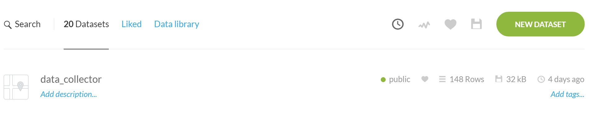

Crowdsourcing
A Leaflet and CartoDB-based Stack
DUSPviz - Skills and Tools for Planners
Hi! I'm Mike. I make maps.
I am a biker, sailor, and skier... and also
a geographer, cartographer, web guy, and educator.

GIS/Data Visualization Specialist
MIT Department of Urban Studies and Planning
mjfoster@mit.edu | @mjfoster83
MIT Civic Data Design Lab
www.civicdatadesignlab.orgFollow Along
Crowdsourcing Data
Using a Leaflet-CartoDB Stack
How do you teach geography and design to non-geographers?
Concepts and fundamentals manifest themselves through tools.
Skills and tools for better planning.
Goal improve departmental capacity in data analysis, visual representation, and technological communication tools.
Spring 2015
http://duspviz.mit.edu/web-map-workshop
GOAL: Introduce webmapping and coding to planners in a relevant and concise way.
#webmapworkshop
- HTML/CSS
- Bootstrap
- Basic Web Map
- JavaScript
- Styling
- PostGIS/CartoDB
- Data Collection
Week 7: Data Collection
Create a Data Collection App
duspviz.mit.edu/web-map-workshop/cartodb-data-collectionProject Concept
A lightweight web map application in which visitors can input information.
What you use:
- LeafletJS
- Leaflet.draw
- CartoDB
- jQuery/jQueryUI
- PHP
What you need:
- A CartoDB Account
- PHP-enabled Webhosting
- Text Editor (Sublime Text)

Task 1: Backend
We need a place to keep our data.
This database has to be spatially enabled.
PostgreSQL and PostGIS would do the trick.
Provides a configured, cloud-based instance of PostGIS
Con: storage limited. Pro: storage still often sufficient.
SQL API
Allows us to hit our CartoDB datasets with SQL Queries, returns JSON object.
Accepts SELECT, INSERT, UPDATE, and DELETE Statements
View DocumentationCoffee Near Me
SELECT * FROM coffee_cafes
ORDER BY the_geom <-> ST_SetSRID(ST_MakePoint({lng},{lat}), 4326) LIMIT 5API Key, Username, and Table Required
Security Matters... we'll talk more about this later.

Task 1: Backend (cont.)
We need something server-side to hold our credentialed information to allow for write access.
We have some options... NodeJS? PHP?
Task 2: Frontend
Easy to use, intuitive interface.
Task 2: Frontend (cont.)
Build a nice modal to collect information.
JavaScript and jQuery
Our Process
1. Create an Empty Dataset in CartoDB
Data Collector
Throw in a couple test points in CartoDB.
2. Set up our HTML document, stylesheets, link relations, and map
Set up the page.
This application is contained all within a single html doc.
Set up the document and map
// Create Leaflet map object
var map = L.map('map',{ center: [42.381899, -71.122499], zoom: 13});
// Add Tile Layer basemap
L.tileLayer('http://a{s}.acetate.geoiq.com/tiles/acetate-hillshading/{z}/{x}/{y}.png', {
attribution: '©2012 Esri & Stamen, Data from OSM and Natural Earth',
subdomains: '0123',
minZoom: 2,
maxZoom: 18
}).addTo(map);Add the new data collection table to Leaflet
Use the SQL API to call a JSON object into your map.
CartoDB SQL API in action
// Get CartoDB selection as GeoJSON and Add to Map
function getGeoJSON(){
$.getJSON("https://"+cartoDBUsername+".cartodb.com/api/v2/sql?format=GeoJSON&q="+sqlQuery, function(data) {
cartoDBPoints = L.geoJson(data,{
pointToLayer: function(feature,latlng){
var marker = L.marker(latlng);
marker.bindPopup('' + feature.properties.description + '
Submitted by ' + feature.properties.name + '
');
return marker;
}
}).addTo(map);
});
};3. Implement the Leaflet.draw plugin to Draw Data
Leaflet Draw is one of many "crazy useful and awesome" Leaflet plugins.
4. Set up a Simple Modal
Utlize jQuery set up a modal window to get information from the user.
5. Use a Proxy to Send Collected Data to CartoDB
Utlize JavaScript to put items to the server.
6. View Data on the Map
Our basic structure and workflow is almost done.
Security
Protect yourself from deviants and queries that wreak havoc.
Check out this pull request to address this problem.Next Steps
Collect lines and polygons.
Add user registration and login.
Edit points and update your dataset.
Expand to Mobile.
#webmapworkshop
Upcoming Revisions
Implement higher security measures
Migrate to Leaflet 1.0
Utilize CartoDB.js and non PHP options
Explore other Data Collection Alternatives
Expand Data Storage Options
#webmapworkshop
Found on Github
All this code is open sourced.